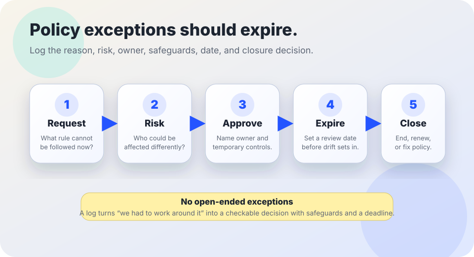

AI governance basics
AI policy exception log template.
A lightweight way to document temporary, approved exceptions to AI rules — with owners, safeguards, expiry dates, and closure decisions — so “we had to work around it” does not become invisible policy drift.
The short answer
An AI policy exception log records who approved a temporary exception, why it was needed, what risk it creates, what safeguards are in place, when it expires, and how it will be closed or renewed.
It is not permission to ignore policy, a substitute for legal or privacy review, or a place to hide risky AI use. It is a visible control for unusual cases: the rule still matters, the exception is time-boxed, and someone is accountable for follow-up.

Why exception logs matter
AI policies often say what should happen in normal conditions: approved tools only, minimum data, human review, documented evaluation, public notice, retention limits, and incident reporting. Real organizations still encounter edge cases: a legacy vendor lacks a setting, a classroom accommodation needs a short-term workaround, a public-service deadline arrives before procurement catches up, or a pilot uncovers a rule that needs clearer wording.
NIST’s AI Risk Management Framework emphasizes governance, accountability, documentation, measurement, management, and monitoring across the AI lifecycle. OMB M-24-10 tells U.S. federal agencies to manage AI use through governance processes, risk practices, inventories, impact assessment, testing, monitoring, and human oversight where appropriate. CISA’s Secure by Design guidance encourages accountable security practices, while the ICO’s AI guidance connects AI deployment with data protection duties. An exception log translates those governance ideas into a small operational habit: record deviations before they become unreviewed precedent.
1. Decide when an exception must be logged
- □ A team wants to use an AI tool, model, integration, data source, prompt, or workflow before the normal approval process is complete.
- □ A required safeguard cannot be applied yet: human review, accessibility check, retention setting, deletion route, vendor disclosure, security review, public notice, or staff training.
- □ A policy rule conflicts with an urgent accessibility, language access, continuity-of-service, safety, or legal deadline and a temporary workaround is proposed.
- □ A vendor update or local workflow change makes the old approval incomplete until a fresh model update review is finished.
- □ An incident, appeal, or user complaint reveals that the written policy does not match how the AI system is actually being used.
If the exception could affect people’s rights, benefits, discipline, safety, privacy, language access, disability access, or public records, treat it as higher risk and require a stronger approval path.
2. Record these fields
| Field | What to write | Related guide |
|---|---|---|
| Exception ID and date | A short identifier, request date, approval date, expiry date, and next review date. | Audit trail basics |
| Rule being excepted | The exact policy, standard, contract term, public promise, or workflow rule that cannot be followed normally. | Public notice template |
| Reason and scope | Why the exception is needed, who may use it, which use case it covers, and what is explicitly out of scope. | Risk register starter |
| Risk and affected people | Privacy, fairness, accessibility, security, records, accuracy, appeal, language access, or service-continuity risks. | Accessibility review |
| Data limits | What data may be used, what data is forbidden, where prompts/outputs/logs go, and when records are deleted or retained. | Data minimization checklist |
| Owner and approver | The system owner, approving role, reviewer roles, and who can pause or revoke the exception. | System owner checklist |
| Safeguards | Temporary controls such as narrower scope, manual review, extra notice, deletion check, monitoring, vendor limits, or incident triggers. | Incident response guide |
| Closure decision | Close, renew with reasons, convert to policy change, finish approval, stop use, or escalate. | Record retention schedule |
3. Add safeguards before approving
Narrow the scope
Limit the exception to a named use case, user group, tool, model, time period, data type, or location. Avoid “all staff may use this until further notice.”
Protect data
Forbid unnecessary personal data, sensitive records, secret information, and uploads that conflict with the deletion workflow or retention schedule.
Keep human review
Require a person to check output before decisions, communications, discipline, eligibility, health, safety, legal, or public-service actions.
Watch for harm
Name signs that trigger pause or escalation: inaccurate output, accessibility barriers, privacy concerns, user complaints, appeals, or unexpected vendor behavior.
4. Make every exception expire
- □ Set an expiry date short enough to force review before the workaround becomes normal. Higher-risk exceptions need shorter windows.
- □ Require renewal to explain what changed, what evidence was gathered, what incidents or complaints occurred, and why normal compliance is still not possible.
- □ If the same exception is renewed repeatedly, treat that as a policy design problem, procurement problem, training gap, or unresolved system risk — not as routine paperwork.
- □ At closure, record whether the team stopped the use, completed the normal review, changed the policy, changed vendors, added safeguards, or escalated the risk.
Bad signs
- Warning: Exceptions have no expiry date, no owner, no approver, or no closure decision.
- Warning: The log says “urgent” or “pilot” but does not explain risk, affected people, or safeguards.
- Warning: Exceptions are used to avoid privacy, accessibility, security, records, notice, consent, appeal, or human-review duties.
- Warning: The same exception keeps renewing without a plan to fix the underlying rule, tool, training, vendor, or workflow.
- Warning: People affected by the AI use cannot find a public notice, contact path, correction path, or appeal route when those are needed.
Starter log language
Exception summary: “Exception [ID] temporarily allows [team/role] to use [AI system/workflow] for [specific use case] from [start date] until [expiry date]. The exception is needed because [reason normal policy cannot be followed]. It does not allow [out-of-scope uses/data/decisions].”
Risk and safeguards: “Potential risks include [privacy/accessibility/fairness/security/records/accuracy/appeal risks]. Safeguards are [human review/data limits/notice/monitoring/vendor setting/training/incident trigger]. The owner is [role], the approver is [role], and the review date is [date]. Closure will be [stop/renew/complete approval/change policy/escalate].”
Adapt this to the organization’s legal duties, procurement rules, public-records requirements, privacy program, accessibility obligations, labor agreements, and risk tier.
Sources and further reading
- NIST — AI Risk Management Framework.
- NIST — Artificial Intelligence Risk Management Framework (AI RMF 1.0).
- U.S. Office of Management and Budget — M-24-10: Advancing Governance, Innovation, and Risk Management for Agency Use of Artificial Intelligence.
- CISA — Secure by Design.
- UK Information Commissioner’s Office — Artificial intelligence guidance.